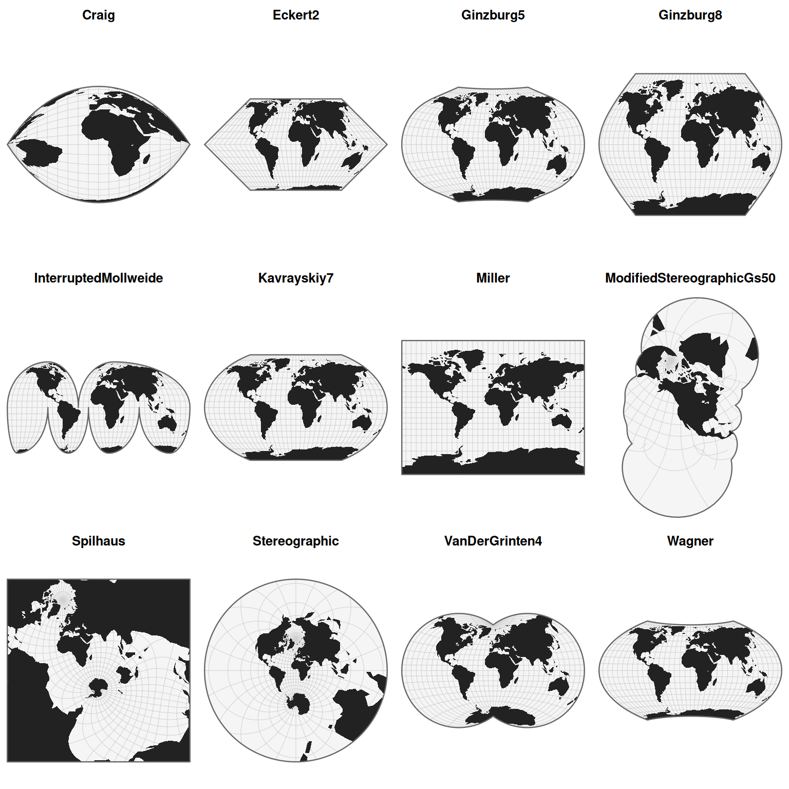
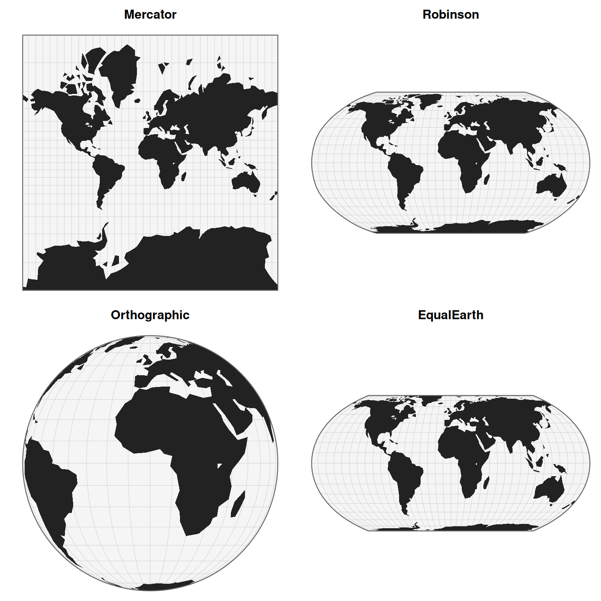

Creates a gallery of projected world maps using the projections available in planisphere. By default, a random sample of projections is selected from the projection registry and displayed in a multi-panel layout.
Arguments
- projections
Character vector of projection names. If `NULL`, projections are selected from `registry()`.
- sample
Integer. Number of projections to display when `projections = NULL`. Ignored if `projections` is provided. Set to `NULL` to display all available projections.
- ncol
Integer. Number of columns in the gallery layout.
- title
Logical. Should projection names be displayed as titles?
- verbose
Logical. Display progress messages while rendering projections.
Value
Draws a gallery of projected maps in the current graphics device and returns `NULL` invisibly.
Details
The function uses the bundled world land dataset and applies each selected projection through [project()]. Maps are displayed using [display()] in a base R graphics layout.
Examples
# Display a random sample of 12 projections
gallery(verbose = FALSE)

# Display selected projections
gallery(
projections = c(
"Mercator",
"Robinson",
"Orthographic",
"EqualEarth"
),
ncol = 2,
verbose = FALSE
)
